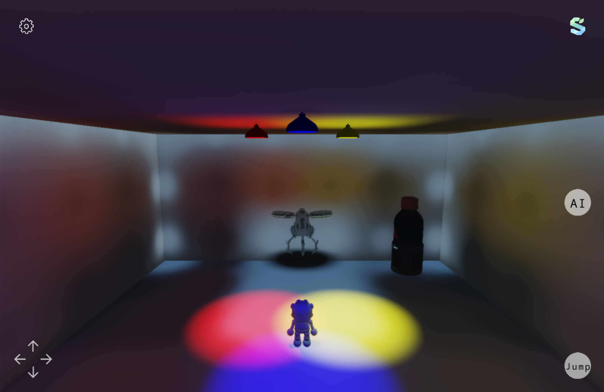

Home / Samples
Samples
Two applications ship with the source. One exercises the whole renderer, one shows the 2D control layer on its own. Both are real applications you can run, not snippets.
Read this first
Apps/Engine is a rendering reference: an island you can walk
around while every pass, knob and debug view is exposed. Samples/Creator
is an application demo built from panels and text. There is no complete game sample — no
score, no win condition, no state machine — and that is the most-requested missing piece
on this site. It is known, it is on the list, and until it exists these two are what there is.
What they are good for is different from what a game sample would be good for. If you want to know how a feature is meant to be used, the reference application uses all of them, and its comments explain the numbers. Most of the guides in Getting started were written by reading it.
The two applications
Apps/Engine
A 1920×1080 3D application: island, sea, mountains, day-night cycle, animated crowds, DDGI, object picking, a settings panel and ten registered compute effects.
Samples/Creator
A 1280×720 2D application that sets RenderDomain.Overlay and skips the 3D passes entirely. Panels, text, shapes, sprites and the ready-made input controls.
What the reference application looks like

DDGI Sky and sun
Sky and sun
 Object picker
Object picker
 Debug views
Debug views
All four are the same running application in different modes. The debug views are ordinary
Sprite2D controls pointed at compute output textures by name
— see Compute effects.
Running them
Clone the repository, open Season.slnx, and pick a target
framework. On Windows both applications build against
net10.0-windows10.0.19041.0; on Linux the plain
net10.0 target is the Vulkan one.
git clone https://github.com/SeasonRealms/SeasonEngine
cd SeasonEngine
# Windows
dotnet run --project Apps/Engine -f net10.0-windows10.0.19041.0
# Linux
dotnet run --project Apps/Engine -f net10.0
Apps/Engine references the AI project, which lives outside
this repository. A clean clone therefore does not restore that reference. Details and the
workaround are on the reference application page and in
The local AI layer. Samples/Creator has no
such dependency and builds from a fresh clone.
Requirements per platform are on Requirements, and there is a packaged Windows build on Download if you would rather look before you build.